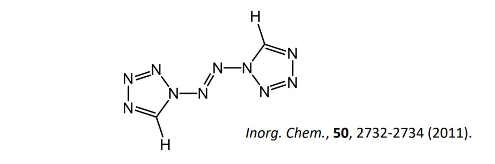

京子さんは，\(6\) 問の数学コンテストに出場した．それぞれの問題は \(0\) 点から \(10\) 点で採点 される．後ろの問題ほど難しいので，京子さんはどの問題についても後ろの問題の点数が前の 問題の点数を超えることはなかった．考えられる京子さんの点数の取り方は何通りあるか．
正六角錐\(\mathrm{O-ABCDEF}\)の内部に全ての面に接する球がある。このとき次の各問いに答えよ。 (1) \(\mathrm{OA}\)と円の直径がともに\(6\)cmであるとき正六角錐の高さを求めよ。 (2) \(\mathrm{OA}=4\sqrt{21}cm,\mathrm{AB}=4\sqrt{3}\mathrm{cm}\)とする。 i) 半径\(r\)を求めよ。 ii)\(\mathrm{M}\),\(mathrm{N}\)をそれぞれ辺\(\mathrm{OD}\),\(\mathrm{OE}\)の中点とする。\(\mathrm{A}\), \(\mathrm{B}\),\(\mathrm{M}\)を通る平面でこの立体を切断した時、球の断面積を求めよ。
\(1\)～\(12\) の数字を以下の条件を満たすように，\(1\) つずつ \(2\) 行 \(6\) 列のマス目に書き入れる． ・全ての左右に隣り合う \(2\) つのマスにおいて，右のマスに書かれている数字の方が大きい． ・全ての上下に隣り合う \(2\) つのマスにおいて，下のマスに書かれている数字の方が大きい． このような数字の書き入れ方は何通りあるか．